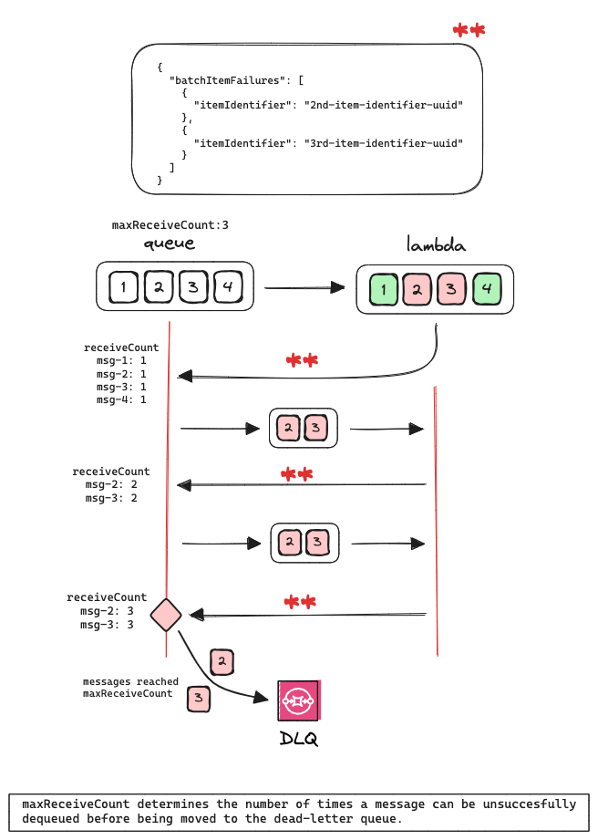
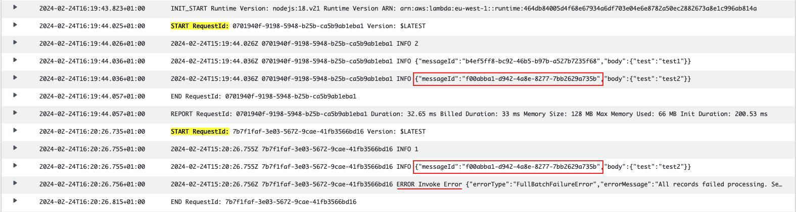

Retries
Lambda retries don’t have any impact. If an error is thrown, the batch will be sent back to the queue. Then, depending on the visibility timeout configured in the queue, the messages of the batch will be reprocessed.
What controls the number of retries in this case is the configuration of a DLQ in the queue that sources the lambda. The field maxReceiveCount will determine how many times a message will be sent to the lambda. Once that number is reached, the message is sent to the DLQ.
CDK config example:
const deadLetterQueue = new Queue(this, 'DeadLetterQueue');
const invocationQueue = new Queue(this, 'InvocationQueue', {
deadLetterQueue: {
queue: deadLetterQueue,
maxReceiveCount: 3,
}
});
const testFunction = new NodejsFunction(...);
testFunction.addEventSource(new SqsEventSource(invocationQueue, {
batchSize: 10,
maxBatchingWindow: Duration.seconds(5),// careful with SQS visibilityTimeout
}));The message in the DLQ will use the same messageIdand it will contain the message body.
It would be necessary to review logs, since it doesn’t show the response/error thrown.
Batch item failure
This configuration will allow to reprocess only those records that failed. To achieve this, configure the event source with reportBatchItemFailures.
const testFunction = new NodejsFunction(...);
testFunction.addEventSource(new SqsEventSource(invocationQueue, {
reportBatchItemFailures: true,
batchSize: 10,
maxBatchingWindow: Duration.seconds(5),// careful with SQS visibilityTimeout
}));For this to succeed, the ids of the failed records need to be returned in the lambda response. This can be self-managed or delegated to Lambda Powertools Batch. For a batch of five messages where two failed, the response should be something like this:
{
"batchItemFailures": [
{
"itemIdentifier": "2nd-item-identifier-uuid"
},
{
"itemIdentifier": "3rd-item-identifier-uuid"
}
]
}
A curiosity about Lambda Powertools Batch is that an error is thrown only in the situation of all messages failing. Otherwise, if only one of two messages fail, the error would be “silent” unless logged.

All the examples are based on processing all records in a batch at least once, even if some failed.
If using Lambda Powertools Batch, the processor BatchProcessorSync could be used to process the records sequentially. If self-managed, then loop through each record instead of using Promise.all().